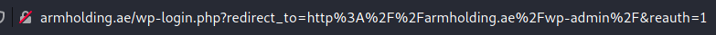
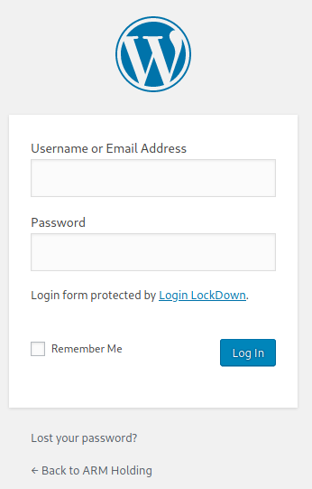
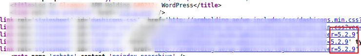
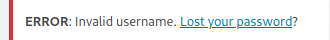
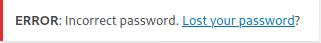
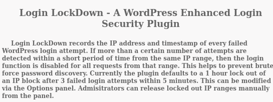
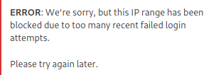
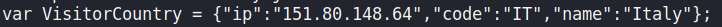
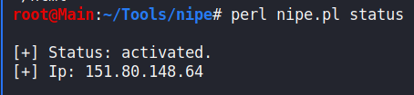

/wp-admin/
 This page uses version
5.2.9 of
WordPress:
Trying out few combinations of usernames and passwords, i was able to find out that the login page has Security Misconfiguration regarding the login details (OWASP Top 6).
The page responds with the following outputs for different invalid login credentials entered:
1.
Invalid Username:
 2.
Incorrect Password:
 I was able to confirm that there is a user named “admin”. I would suggest to preform bruteforce on the user “admin” with commonly used default passwords, though it might be risky because the site uses Login LockDown service which will block IP addresses range that entered wrong credentials too many times in a range of 5 minutes by default or an unknown time range due to manual modifying.
 Possible Solutions in the meantime
:
Without re-configuring IP range
:
1. fail 3 times as suggested above in a the range of 5 minutes.
2. Try the 4th time and check if IP address got blocked (The page will respond if the IP range got blocked like so:
3. If the page didn't respond (after more than the 5 minutes cooldown and the 4 failed attempts) with the message above, it means the blocking mechanism got reset for the IP range
- Build a script that:
→ Tries to bruteforce 3 passwords from a word lists.
→ Checks for a different response (other than: “Incorrect Password”)
→ Sleep 5:10 minutes. (Refreshes cooldown)
→ Try the next 3 passwords from a wordlist
→ Repeat steps until “Incorrect Password” not in response.
Using nipe \ tor \ proxychains to change IP address:
Build a script that will:
1. check for the response of the page.
2. When response has “IP range has been blocked” - run nipe for example to change external ip address
 = `
curl` command output on
noc.co.il after activating `
nipe`
`curl` command output on noc.co.il after activating `nipe`
3. Iterate through passwords again until IP has been blocked.
4. Restart `nipe` to get a fresh unblocked IP.
5. Try more passwords, let run in background while looking for different vulnerabilities.